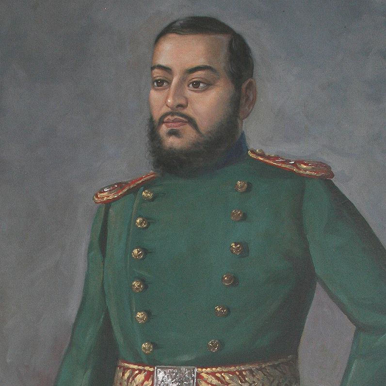

Trailokya Bikram Shah Dev
Biography:
Trailokya Bikram Shah Dev was born on November 30, 1847 in Hanuman Dhoka Durbar, Nepal.
He was the son of Surendra Bikram Shah Dev and Trailokya Rajya Lakshmi Devi and the prince of Nepal.
He died before his father's death at the age of 30 on March 30, 1878 in Hanuman Dhoka Durbar,Nepal.